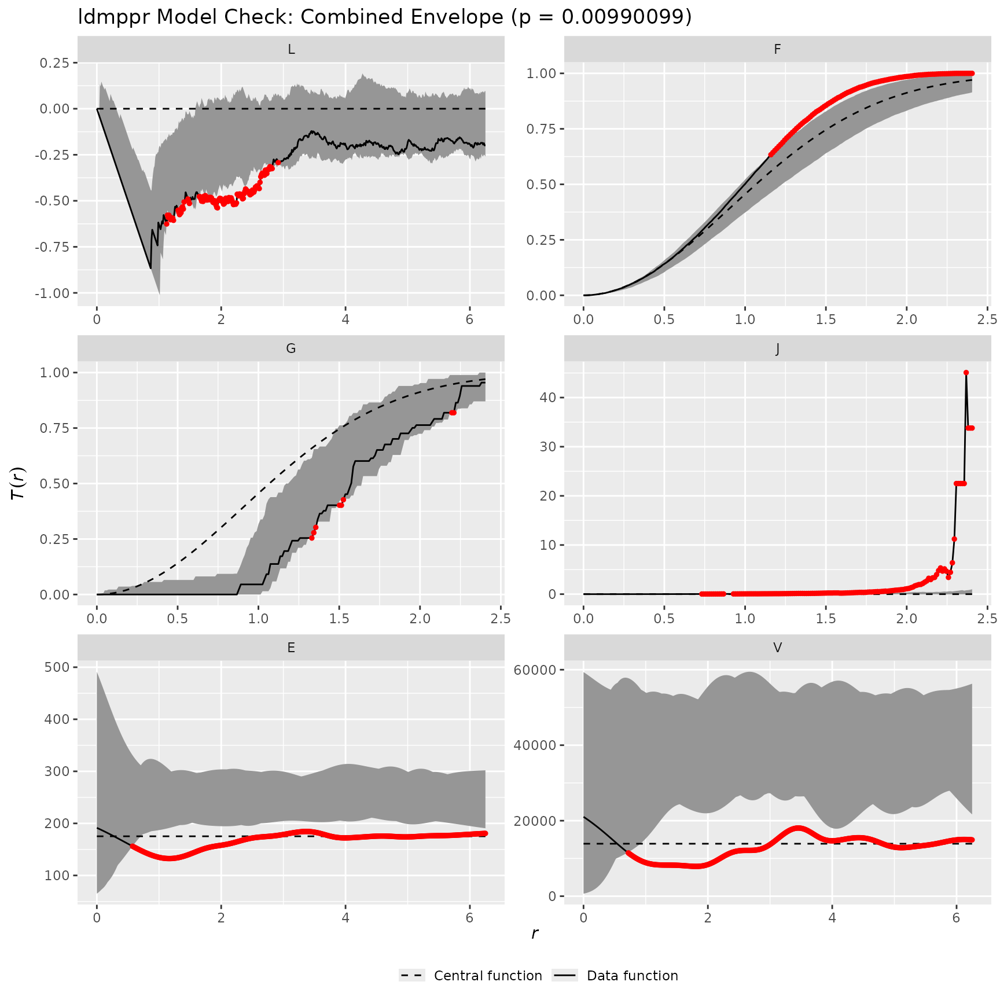
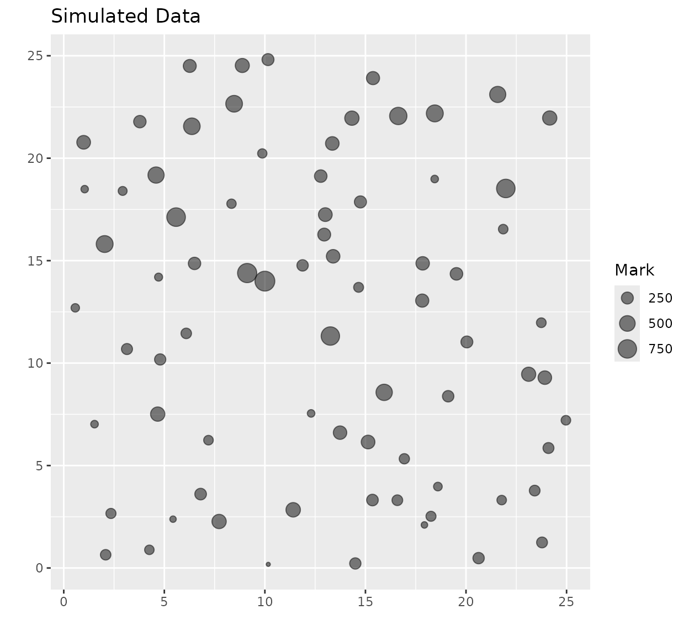

library(ldmppr)
library(dplyr)
#>
#> Attaching package: 'dplyr'
#> The following objects are masked from 'package:stats':
#>
#> filter, lag
#> The following objects are masked from 'package:base':
#>
#> intersect, setdiff, setequal, unionData
To illustrate the use of the ldmppr package, we will be
using the included small_example_data dataset. This dataset
consists of locations and sizes for points in a (25m x 25m) square
domain.
data("small_example_data")
nrow(small_example_data)
#> [1] 121
head(small_example_data)
#> x y size
#> 1 10.000000 14.0000000 900.7306
#> 2 5.636737 20.3068181 523.1122
#> 3 24.086291 6.2358462 519.3012
#> 4 21.191344 14.0034707 490.1228
#> 5 14.742128 0.3113149 400.2289
#> 6 20.160199 3.6875049 395.8505We also include a collection of example raster files obtained from an
ESS-DIVE repository (see the help file for
small_example_data for details).
Introduction
The ldmppr package provides tools for:
- estimating a mechanistic spatio-temporal point process model for a reference marked point pattern (by mapping marks to event times),
- training a mark model that relates covariates (and optional competition indices) to marks,
- checking model fit using non-parametric summaries and global envelope tests, and
- simulating from the fitted model.
As of version 1.1.0, the main workflow functions return
S3 objects with standard methods (print(),
plot(), coef(), as.data.frame(),
etc.). In most cases you should no longer need helper plotting functions
like plot_mpp().
Example workflow
Step 1: Estimate the point process parameters
We start by estimating the parameters of a self-correcting
spatio-temporal point process using the
estimate_process_parameters function. This function makes
use of user specified optimization algorithms in the nloptr
function to perform estimation through log-likelihood optimization. The
function can be run with three different optimization strategies
("local", "global_local", "multires_global_local") that
allow the user to control the approach. The "local"
strategy performs a local optimization, where the
"global_local" first runs a global optimization and then
uses the solution as a starting point for a local optimization. Finally,
the "multires_global_local" strategy performs similarly to
the "global_local", but iterates further at the local level
by increasing the resolution of the spatio-temporal grid and repeating
the local optimization with increasing degrees of polish. The function
requires the observed locations and observed arrival times, which are
generated from the observed sizes using a power law mapping function.
These inputs are accepted as:
- a matrix/data.frame with columns
(time, x, y), or - a matrix/data.frame with columns
(x, y, size)plus a mapping hyperparameterdelta(or a vectordelta_valuesfor a delta-search).
The power law mapping function depends on the hyperparameter
delta, which controls the shape of the mapping relationship
between sizes and arrival times. The function also requires the grid
values for the optimization process, the initial parameter values, the
upper bounds for the parameters, and the optimization algorithm (either
global and local, or just local depending on strategy) to use. The
function returns the optimal parameter estimates for the self-correcting
point process.
Below we show the common case where you start from
(x, y, size) with delta = 1.
# Use the (x, y, size) form and let estimate_process_parameters() construct time via delta
parameter_estimation_data <- small_example_data
# Define the integration / grid values used by the likelihood approximation
x_grid <- seq(0, 25, length.out = 20)
y_grid <- seq(0, 25, length.out = 20)
t_grid <- seq(0, 1, length.out = 20)
# Parameter initialization values: (alpha1, beta1, gamma1, alpha2, beta2, alpha3, beta3, gamma3)
parameter_inits <- c(1.5, 8.5, 0.015, 1.5, 3.2, 0.75, 3, 0.08)
# Upper bounds for (t, x, y)
upper_bounds <- c(1, 25, 25)
fit_sc <- estimate_process_parameters(
data = parameter_estimation_data,
process = "self_correcting",
x_grid = x_grid,
y_grid = y_grid,
t_grid = t_grid,
upper_bounds = upper_bounds,
parameter_inits = parameter_inits,
delta = 1,
parallel = FALSE,
strategy = c("global_local"),
global_algorithm = "NLOPT_GN_CRS2_LM",
local_algorithm = "NLOPT_LN_BOBYQA",
global_options = list(maxeval = 150),
local_options = list(maxeval = 300, xtol_rel = 1e-5, maxtime = NULL),
verbose = FALSE
)
# Print method for ldmppr_fit objects
print(fit_sc)
#> <ldmppr_fit>
#> process: self_correcting
#> engine: nloptr
#> n_obs: 121
#> delta*: 1
#> objective(best): 157.7901
#> optimal parameters: -2.35915611.212930.018337991.5852524.4480860.70535082.3648550.08446602
# Extract parameters
estimated_parameters <- coef(fit_sc)
estimated_parameters
#> [1] -2.35915570 11.21293135 0.01833799 1.58525187 4.44808655 0.70535081
#> [7] 2.36485473 0.08446602Notes
- If you want to search over possible mappings between size and time,
provide
delta_values = c(...)and setparallel = TRUEto run one optimizer per delta (optionally in parallel). - For better accuracy you typically want denser grids than in this vignette example; the small grid here is chosen to keep runtime modest.
Step 2: Train a mark model
Next, we use the train_mark_model function to train a
suitably flexible mark model using location-specific covariates
(rasters), (optionally) semi-distance dependent competition indices, and
the generated arrival times to predict sizes. The function uses
either:
- gradient boosted trees (
model_type = "xgboost"), or - random forest (
model_type = "ranger"),
and may be run in parallel if desired. The user has control over the choice of a Gradient Boosting Machine (GBM) or Random Forest (RF) model, the bounds of the spatial domain, the inclusion of competition indices, the competition radius, the correction method, the final model selection metric, the number of cross validation folds, and the size of the parameter tuning grid for the model.
# Load raster covariates shipped with the package
raster_paths <- list.files(system.file("extdata", package = "ldmppr"),
pattern = "\\.tif$", full.names = TRUE
)
raster_paths <- raster_paths[!grepl("_med\\.tif$", raster_paths)]
rasters <- lapply(raster_paths, terra::rast)
# Scale rasters once up front
scaled_rasters <- scale_rasters(rasters)
# Train the mark model, passing the estimated self-correcting model fit from Step 1
mark_model <- train_mark_model(
data = fit_sc,
raster_list = scaled_rasters,
scaled_rasters = TRUE,
model_type = "xgboost",
parallel = FALSE,
include_comp_inds = FALSE,
competition_radius = 10,
edge_correction = "none",
selection_metric = "rmse",
cv_folds = 5,
tuning_grid_size = 20,
verbose = TRUE
)
#> Training mark model
#> Model type: xgboost
#> Selection metric: rmse
#> CV folds: 5
#> Tuning grid size: 20
#> Include competition indices: no
#> Edge correction: none
#> Step 1/6: Preparing training data...
#> Rows: 121
#> Done in 0.0s.
#> Step 2/6: Configuring parallel backend...
#> Parallel: off
#> Model engine threads: 3
#> Done in 0.0s.
#> Step 3/6: Extracting raster covariates...
#> Using pre-scaled rasters (scaled_rasters = TRUE).
#> Extracted 4 raster feature(s).
#> Done in 0.0s.
#> Step 4/6: Building model matrix (and competition indices if requested)...
#> Final training rows: 121
#> Final feature columns (incl x,y,time): 7
#> Done in 0.0s.
#> Step 5/6: Fitting model (with optional CV tuning)...
#> Tuning enabled: 5-fold CV with 20 candidate(s).
#> Total model fits: 100 (5 folds x 20 grid).
#> Done in 27.7s.
#> Step 6/6: Finalizing output object...
#> Done in 0.0s.
#> Training complete. Total time: 27.8s.
# Print method for ldmppr_mark_model objects
print(mark_model)
#> <ldmppr_mark_model>
#> engine: xgboost
#> has fit_engine: TRUE
#> has xgb_raw: FALSE
#> n_features: 7
# Summary method for ldmppr_mark_model objects
summary(mark_model)
#> Length Class Mode
#> engine 1 -none- character
#> fit_engine 1158 xgb.Booster list
#> xgb_raw 0 -none- NULL
#> recipe 12 recipe list
#> outcome 1 -none- character
#> feature_names 7 -none- character
#> info 7 -none- list
#> cache 0 -none- environmentIf the user wants to save the trained mark model (and reload it at a
later time), the package provides the save_mark_model and
load_mark_model functions (which handle model-engine
specifics appropriately):
save_path <- tempfile(fileext = ".rds")
save_mark_model(mark_model, save_path)
mark_model2 <- load_mark_model(save_path)
mark_model2Step 3: Check model fit
Now that we have (i) an estimated process model and (ii) a trained
mark model, we can check the model fit using the
check_model_fit function. This function provides a variety
of non-parametric summaries for point processes and global envelope
tests to assess the goodness of fit of the model. The package provides
individual envelope tests for the L, F, G, J, E, and V statistics, or a
combined envelope test for all statistics simultaneously by making use
of the functionality of the spatstat and GET
packages. By plotting the combined envelope test, we can visually assess
the goodness of fit of the model and obtain a
-value
measuring how well the estimated model captures the relationships
observed in the reference data. Typically a
-value
less than 0.05 indicates a poor fit of the model to the data, and the
authors of the GET package recommend a minimum of 2500
simulations to obtain a valid
-value
at the .05 level.
check_model_fit() returns an S3 object with a
plot() method (by default it plots the combined global
envelope test).
# Check the model fit by passing the estimated process and trained mark models from Steps 1 and 2
model_check <- check_model_fit(
t_min = 0,
t_max = 1,
process = "self_correcting",
process_fit = fit_sc,
raster_list = scaled_rasters,
scaled_rasters = TRUE,
mark_model = mark_model,
include_comp_inds = FALSE,
thinning = TRUE,
edge_correction = "none",
competition_radius = 10,
n_sim = 100,
save_sims = FALSE,
verbose = TRUE,
seed = 90210
)
#> Registered S3 method overwritten by 'spatstat.geom':
#> method from
#> print.metric yardstick
# Plot method for ldmppr_model_check objects (defaults to combined global envelope test)
plot(model_check)
You can still access the underlying GET objects if you
want (e.g., model_check$combined_env), but for most
workflows plot(model_check) is sufficient.
Step 4: Simulate from the fitted model
Finally, we can simulate a new marked point process realization from the fitted model.
simulate_mpp() returns an object of class
ldmppr_sim with plot() and
as.data.frame() methods.
# Simulate a new marked point pattern by passing the estimated process and trained mark models from Steps 1 and 2
simulated <- simulate_mpp(
process = "self_correcting",
process_fit = fit_sc,
t_min = 0,
t_max = 1,
raster_list = scaled_rasters,
scaled_rasters = TRUE,
mark_model = mark_model,
include_comp_inds = TRUE,
competition_radius = 10,
edge_correction = "none",
thinning = TRUE,
seed = 90210
)
# Plot method for ldmppr_sim
plot(simulated)
# Data-frame view of the simulated realization
head(as.data.frame(simulated))
#> time x y marks
#> 1 0.0000000 10.000000 14.000000 900.3945
#> 2 0.5665075 6.876867 11.000582 616.8078
#> 3 0.5681509 23.172989 5.596634 509.3947
#> 4 0.5888005 15.098973 22.274414 606.6250
#> 5 0.5888236 9.816135 12.080103 576.7651
#> 6 0.5995983 7.749460 7.628359 630.4380Summary
This vignette demonstrates the core ldmppr workflow
using the updated S3-based interfaces:
-
estimate_process_parameters()→ returns a fitted process object (ldmppr_fit) -
train_mark_model()→ returns a fitted mark model object (ldmppr_mark_model) -
check_model_fit()→ returns a model-check object (ldmppr_model_check) -
simulate_mpp()→ returns a simulation object (ldmppr_sim)
These objects are designed to be composable and to behave like standard R model objects through S3 methods.